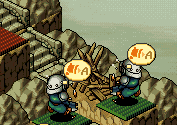

| 概要 | 情報 | ステージ攻略 |
| 地図 | テクニック | モナモナ攻略へ |
|
敵国の城周辺を制圧して城壊し 下の画像のように敵国周辺の土地を自国の家で埋めると、敵国の収入が少なくなり、城を壊しやすくなります。 逆に自国の城周辺を制圧されると、資金難になるので注意しましょう。 (こんなふうに) |
|
多人数で破壊 1ユニットで何かを壊すよりも、大勢で破壊した方が早いです。例外は当然あるのでしょうが、同じクラスのユニットなら間違いなく当てはまります。 (城を壊すときは特に有効)  (柵も同じです) |
|
家を壊して回復 自国の家を、自国のユニットに壊すように指示を出すと、そのユニットの体重が家のDFの値分回復します。覚えておいて損はないかもしれません。 |
|
ユニットの最大数 一つのステージで何体のユニットが用意できるかを調べているのですが、よく分かりません。 恐らく32ユニットが上限だと思われますが、もしかしたら40ユニットくらいは用意できるのかもしれません。 今分かっているのは、家が1軒だけの場合、存在できるユニットは16体、2軒以上だと32体ということだけです。 (調査中・・・) |
|
家の建て方 ユニットをオートにしておくと、1マスおきに家を建てるようになります。 序盤はそれでいいのですが、終盤になると時間がかかりますし、そこまでユニットも必要ないかもしれません。その場合は、ユニットに細かく指示を出し、2マスおきに、かつ無駄がないように家を建てると効率的です。 (見た目はスカスカでも、全て埋まっています) |
|
戦闘効率 戦闘効率は、自国の損害と敵国の損害の比率から計算しています。つまり、自国のユニットの体重が削られれば削られるほど、戦闘効率は下がります。これは、家を作ったときや柵を作ったときなどに減る体重も対象です。 そのため敵国の主力部隊を倒す場合は、できる限り自国の被害を減らす工夫をしなくてはいけません。 |
| 概要 | 情報 | ステージ攻略 |
| 地図 | テクニック | モナモナ攻略へ |